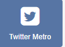
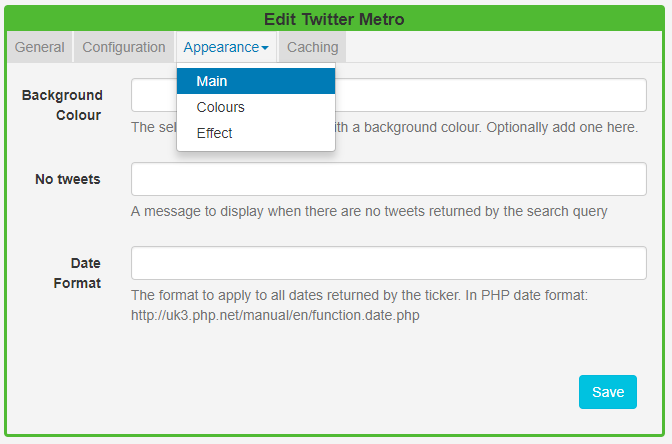
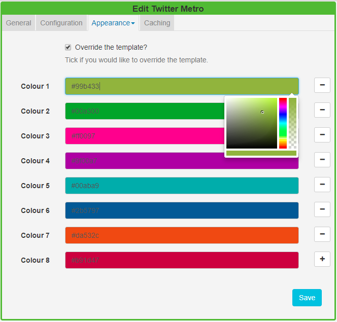

Twitter Metro
The Twitter Metro Module provides access to the Twitter Search API. Add the Twitter Metro Widget to Layouts to display metro tiles of Twitter feeds.
Installation
Please ensure that the installation steps Connecting to Twitter have been taken as detailed on the Twitter Module page.
Twitter Metro Module Installation
- Select the Modules page under the Administration section and install the Twitter Metro Module.
- Once installed click on the row menu for the Twitter Metro Module and click Edit.
- Enter the generated API key and API secret, you can use the same generated key/secret as before.
- Optionally adjust the Cache Period.
Add Twitter Metro Widget
Click on the Twitter Metro Widget on the toolbar, add / drag to the target Region. 
If you are using 1.8, select Twitter Metro from the Widget Toolbox to add to your Region Timeline and complete the form fields as explained below.
The Twitter Metro Widget will automatically size portrait/landscape based on the size of the Region that it is added to. It will resize as if it were an image for best consistency across all display resolutions.
General
- Provide an optional name.
- Choose to override the default duration.
Configuration
Complete the form options as required, refer to the Twitter page.
Appearance
Use the Appearance tab to edit the Main template, Colours to be applied and the Effect to be used to transition between Tweets.

Main
- Optionally add a background colour.
- Provide a No Tweets message to display when there are no Tweets to return, based on the search query.
- Apply a date format to be used for returned results, in PHP date format 9refer to the Twitter page.
Colours
- Use the drop-down menu to specify a colour pallet to be applied to the metro tiles.
- Tick to Override the template and specify your own colour pallets to use for the metro tiles

- Click in the colour bars to re-select using the colour picker, remove by clicking
-or add using+ - Ensure that you Save your changes.
Effect
- Select an optional effect/speed to be used to transition between Tweets, to be applied to each tile.
Caching
Include a suitable time for the Update Interval in minutes, keeping it as high as possible. This determines how often the Module will request data from your feed.